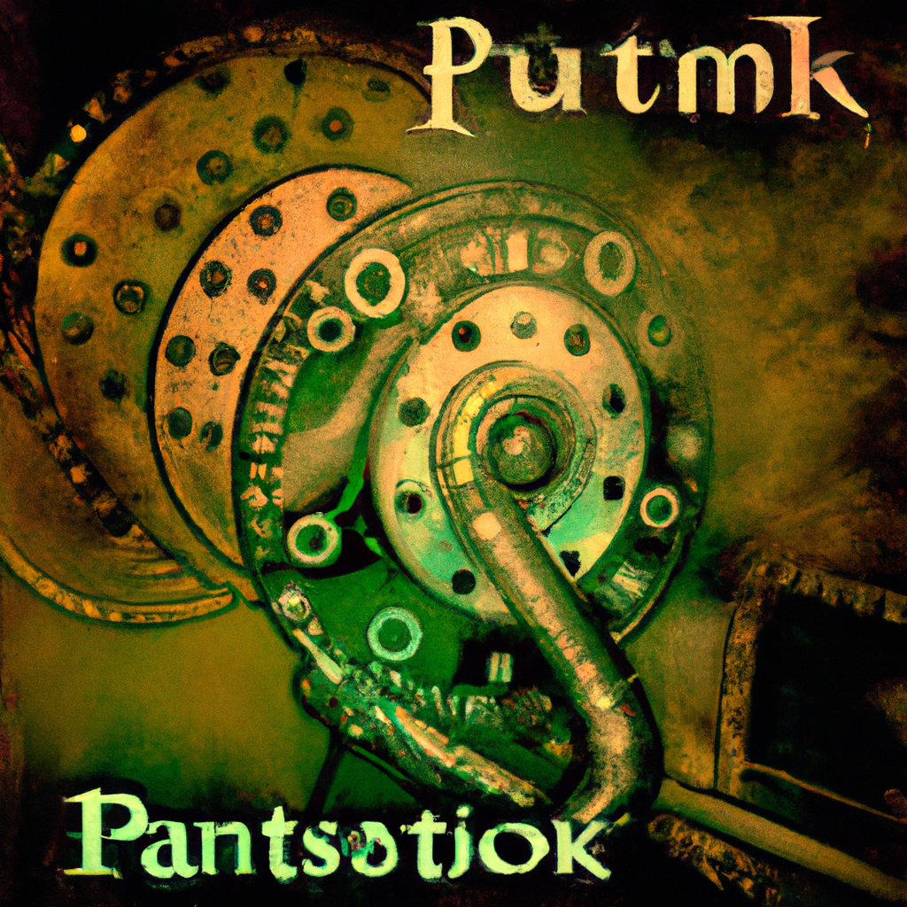

Future of Python and AI
As the demand for AI and machine learning continues to grow, it's no surprise that Python has become the go-to language for many developers in this field. With its simple syntax, extensive libraries, and powerful data analysis capabilities, Python has become a popular choice for building AI applications.
But what does the future hold for Python in the world of AI? Will it remain the dominant language or will other languages take its place?
One thing is for sure, Python is here to stay. With the rise of big data and the need for efficient data analysis, Python's data science capabilities will continue to be in high demand. Its flexibility and ease of use make it a preferred language for data scientists, and with the constant development of new libraries and frameworks, Python will only become more powerful in this field.
In terms of AI, Python has also established itself as a strong contender. Its libraries for machine learning, such as TensorFlow and PyTorch, have made it easier for developers to build and train AI models. Additionally, the growing community of Python developers has led to a vast amount of resources and support for AI development.
However, as technology evolves, so does the need for more specialized languages. This has led to the rise of languages like Julia, which is specifically designed for scientific computing and data analysis. While it may not have the widespread popularity of Python yet, it could potentially challenge Python in the AI field in the future.
One area where Python may face competition is in the development of AI applications for mobile platforms. With the growth of mobile technology, there is a growing demand for AI-powered mobile apps. This has led to the development of languages like Swift and Kotlin, which are specifically designed for mobile development. As AI becomes more prevalent in mobile apps, these languages could pose a threat to Python's dominance in this area.
In conclusion, Python's future in AI looks promising. Its robust capabilities in data science and machine learning make it a strong choice for developers. However, as technology advances and new languages emerge, Python may face some competition in certain areas. But for now, it remains a top choice for anyone looking to build AI applications. As an instructor, I am excited to see how Python will continue to evolve and shape the future of AI.